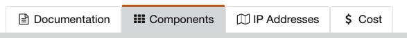
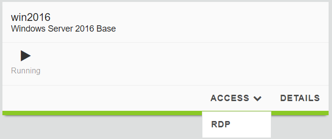
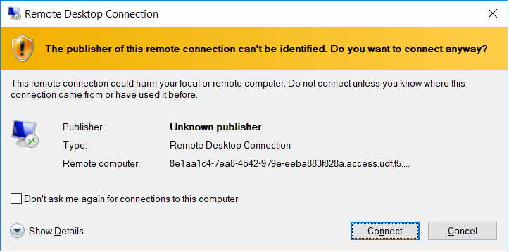
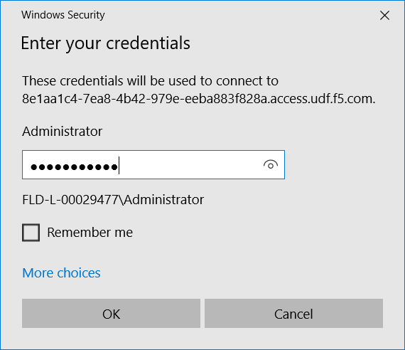
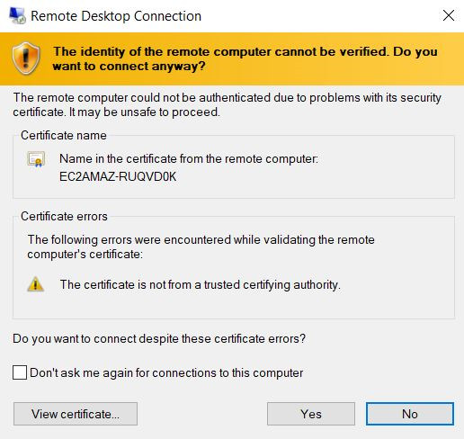
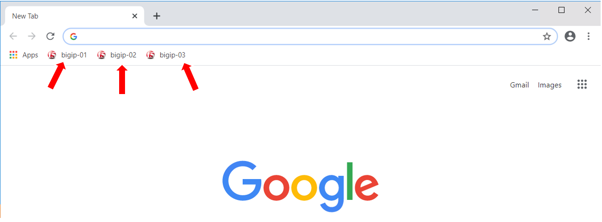

Getting Started¶
Lab Components¶
The following table lists the virtual appliances in the lab along with their networks and credentials to use.
| System Type | Networks | Credentials |
|---|---|---|
| BIGIP-01 | Management: 10.1.1.4 | admin / @gi1ity2020 |
| BIGIP-02 | Management: 10.1.1.7 | admin / @gi1ity2020 |
| BIGIP-03 | Management: 10.1.1.8 | admin / @gi1ity2020 |
| Windows Server | Management: 10.1.1.5 | Administrator / brwP61Ag |
Starting the Lab¶
In order to complete this lab, you will connect to a Windows jump host, and you will perform all steps from there. In the instructions below, there are steps to connect to that jump host first, then you will complete the other steps from there. You can open the lab guide from the Windows jump host in order to make it easier to follow the rest of the lab.
Exercise 1 - Login to Windows jump host
Click on the
Componentstab in your UDF deploymentUnder
Systemsfind the Windows Server 2019 Base and clickAccess, then clickRDP. When prompted, select option toSaveRDP file. RDP file will be downloaded to your local machine.Open the RDP file downloaded in the previous step and click
Connectwhen prompted.Enter credentials: Administrator / brwP61Ag then click
OKWhen prompted, click
Yesto connection, and session will be established to Windows host.Congratulations! You are now connected to your Windows jump host.
Using browser to connect to BIGIP UI¶
When using Chrome on your jumphost there are three shortcuts to each appliance for your convenience.
Bypass any security warning you may receive by clicking Advanced in the
browser, then clicking Proceed